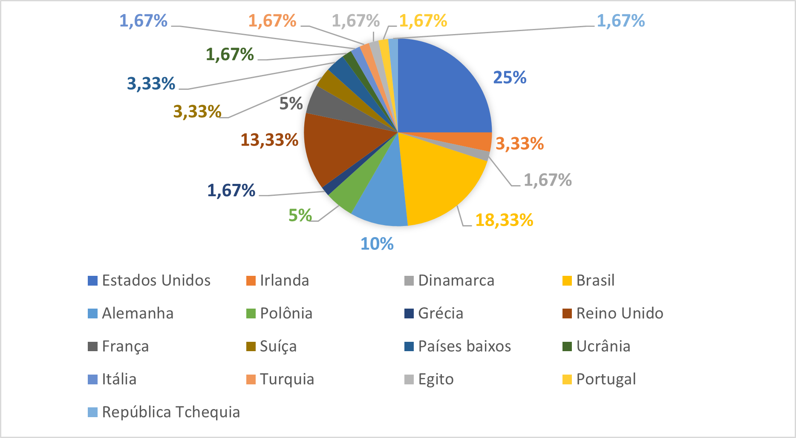
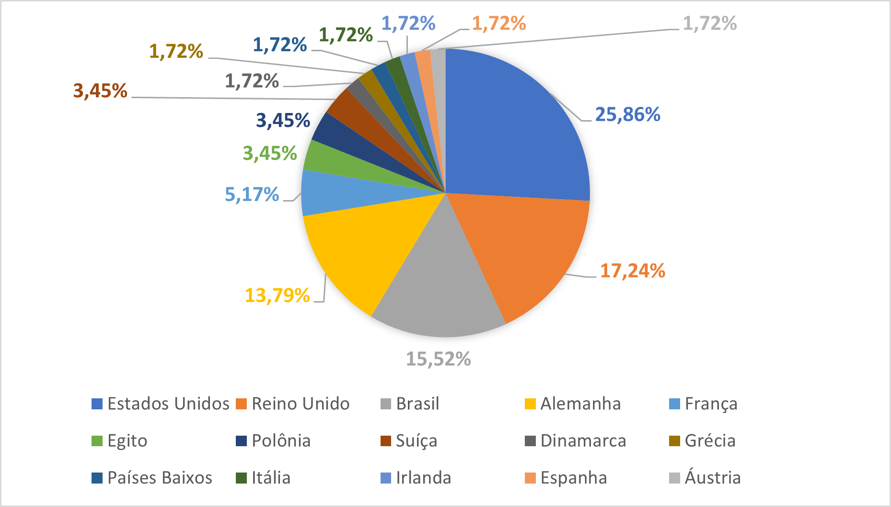

Gráfico: Porcentagens da nacionalidade dos autores por país

Gráfico: Porcentagem dos países de formação acadêmica dos autores

Mapa: Nacionalidade dos autores por continente

Analise dos gráficos:
Analisando o mapa, onde podemos ver a porcentagem da nacionalidade dos autores estudados por continente, é possível notar a forte presença do eurocentrismo na sociedade atual, já que ela reflete no que está presente na BNCC (Base Nacional Comum Curricular). O fato de que 55% dos autores trabalhados em sala de aula tem a nacionalidade europeia, sendo 13,33% deles nascidos no Reino Unido, fala por si só. Mais da metade dos nossos conhecimentos são baseados na Europa, o que a torna protagonista na nossa cultura e na composição da nossa sociedade. E podemos concluir que essa é uma das principais razões para continentes como a Ásia, Oceania e América-Central não possuírem nenhum autor presente nas nossas aulas.
A América do Norte também tem uma grande vantagem no mapa das nacionalidades, com 25% dos autores sendo norte-americanos. Mas se olharmos para o gráfico dos países, vemos que todos são naturais do Estados Unidos, o que o torna o país com a maior porcentagem da nacionalidade de autores e mostra que, assim como a Europa, o que vem dos Estados Unidos é considerado superior pela sociedade, por ser um país “de primeiro mundo”.
Cerca de 18% dos autores são naturais da América do Sul, porém, se levarmos em conta o gráfico da nacionalidade por país, podemos ver que todos esses 18% são brasileiros, o que é justificado pelo fato de estarmos analisando uma escola do Brasil, e é a partir de pessoas que viveram a história do país que vamos entendê-la. Ainda assim, quando estudada a história do Brasil, ainda são citados autores estrangeiros.
O continente africano possui apenas 1,67% dos autores, sendo eles nascidos no Egito. Podemos refletir muito em cima desse fato, principalmente pelo fato de que a África foi o primeiro continente abitado pelo ser humano, por tanto, com certeza tem muito mais conhecimento a oferecer.
Considerando todas essas informações, vemos que o gráfico dos países de formação acadêmica dos autores não foge muito disso. Ele possui o mesmo destaque nos Estados Unidos, e até apresenta um pequeno aumento, mostrando que a formação acadêmica lá é geralmente mais valorizada. Mas analisando todos os gráficos, podemos ver que a educação acadêmica mais procurada é no Reino Unido, já que apresentou o maior aumento em comparação ao gráfico das nacionalidades. Logo atrás temos a Alemanha, que também apresenta aumento significativo, e ambos são países da Europa. No Brasil houve um leve declínio, o que pode ser interpretado como uma desvalorização da educação brasileira. Por último, o Egito apresenta um pequeno aumento, mas continua sendo o único país do continente africano a aparecer no gráfico.
Nadine Gordimer
Nadine Gordimer foi uma romancista, ensaísta e contista. Nasceu na cidade de Spings – atualmente Gauteng, cidade mineira na região oriental de Johanesburgo, no Transvaal, África do Sul. Era filha de emigrantes judeus, o pai originário da Lituânia e a mãe, da Inglaterra. Estudou na Universidade de Witwatersrand, em Joanesburgo, e viajou para várias partes da África, Europa e América do Norte. Casou duas vezes e teve uma filha e um filho.
Nos anos do regime do Apartheid, Nadine Gordimer esteve envolvida em uma organização político-literária de base, tendo sido membro fundadora e patrocinadora do Congresso de Escritores Sul-Africanos (COSAW) por vários anos. Foi abertamente uma defensora do Congresso Nacional Africano (ANC), mesmo mesmo durante os anos de clandestinidade.
Nadine começou a escrever aos quinze anos pequenas histórias que publicou com o nome de Face to Face (Face a face) dez anos mais tarde, em 1949, na revista liberal Fórum, de Johanesburgo. É autora de mais de trinta livros, entre os quais romances, ensaios e crônicas em que retratou a deterioração social que afetou a África do Sul durante o Apartheid. Desde o seu romance de estreia, The Lying Days (Os dias da mentira) (1953), até The Conservationist (O conservador) (1974) e July's people (A Gente de July) (1981), ela dedicou-se a abordar as difíceis escolhas morais surgidas numa sociedade marcada pela segregação racial.
Nos anos 1970, descreveu a si mesma como “uma branca sul-africana radical”. Na arena cultural, fundou o Congresso Sul-Africano de Escritores com o objetivo de tornar a leitura e a escrita acessível em comunidades negras. Depois das eleições democráticas de 1994, escreveu None to accompany me (Ninguém para me acompanhar) (1994) e The house gum (A arma da casa) (1998), romances que retratavam as cicatrizes deixadas pelo do regime do Apartheid.
Alguns dos muitos prêmios que recebeu foram: O Booker Prizer (1974), o Grand Aigle d'Or (1975), o Prêmio Malaparte (1985) e o Prêmio Nobel de Literatura (1991) – tendo sido a primeira mulher do continente Africano a receber um. Ela é membro da Royal Society of Literature e membro honorário da American Academy of Arts and Sciences e da American Academy and Institute of Arts and Letters. Na África do Sul, Nelson Mandela a concedeu a Ordem da Cruz do Sul.